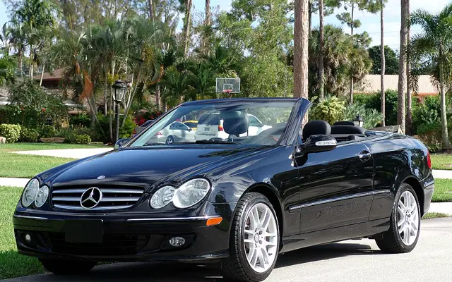

Par Motor › Precios por modelo › Mercedes-Benz CLK
Precio de segunda mano · noviembre de 2026¿Cuánto vale un Mercedes-Benz CLK de segunda mano?

Precio justo estimado de un Mercedes-Benz CLK usado en España, año por año, con los kilómetros normales para su edad y en buen estado: de 8.200 € a 18.000 €. Para tasar el tuyo con sus kilómetros reales y su estado, usa el tasador gratis.
Precios del Mercedes-Benz CLK por año
CLK W209 (2002–2010)
Precio de nuevo: 200 Kompressor 163 CV, 40.000 € · 220 CDI 150 CV, 42.000 € · 320 CDI 224 CV, 52.000 €
| Año | Km normales | 200 Kompressor 163 CV · Gasolina | 220 CDI 150 CV · Diésel | 320 CDI 224 CV · Diésel |
|---|---|---|---|---|
| 2010 | 100.000 km | 14.300 € | 14.500 € | 18.000 € |
| 2009 | 100.000 km | 13.300 € | 13.600 € | 16.800 € |
| 2008 | 100.000 km | 12.400 € | 12.600 € | 15.700 € |
| 2007 | 100.000 km | 11.600 € | 11.800 € | 14.600 € |
| 2006 | 100.000 km | 10.800 € | 11.000 € | 13.600 € |
| 2005 | 100.000 km | 10.100 € | 10.300 € | 12.700 € |
| 2004 | 100.000 km | 9.400 € | 9.600 € | 11.900 € |
| 2003 | 100.000 km | 8.800 € | 8.900 € | 11.100 € |
| 2002 | 100.000 km | 8.200 € | 8.300 € | 10.300 € |
Kilómetros normales: 15.000 al año en gasolina, híbridos y eléctricos, y 20.000 en diésel, con un máximo de 100.000 km (por encima no tasamos: el precio depende demasiado del historial de cada coche). Cifras redondeadas a 100 €.
Preguntas frecuentes
¿Cuánto vale un Mercedes-Benz CLK de segunda mano?
Según el año, la versión y los kilómetros, un Mercedes-Benz CLK usado vale hoy de 8.200 € a 18.000 € en España. El más barato de nuestra tabla es un 200 Kompressor de 2002 (8.200 €) y el más caro un 320 CDI de 2010 (18.000 €). Son precios justos estimados entre particulares y profesionales, con los kilómetros normales para su edad y en buen estado.
¿Cuánto valor pierde un Mercedes-Benz CLK al año?
Con unos años encima, un Mercedes-Benz CLK pierde alrededor de un 7 % de su valor cada año (calculado sobre el 200 Kompressor de la generación CLK W209). Los primeros años la caída es mayor y a partir de los 70.000 km se acelera.
¿Qué motorizaciones tiene el Mercedes-Benz CLK?
En nuestra base de datos hay versiones gasolina y diésel, en 1 generación: CLK W209.
¿Cómo sé si me piden demasiado por un Mercedes-Benz CLK?
Abre el tasador de Par Motor, elige el Mercedes-Benz CLK, el año y los kilómetros reales, y escribe lo que te piden. Te diremos si está por debajo del precio justo (chollo) o por encima (caro). Es gratis y no pide registro ni matrícula.
Otros Mercedes-Benz
- CLA
- Clase A
- Clase B
- Clase C
- Clase E
- Clase G
- Clase S
- Clase T
- Clase V
- CLS
- EQA
- EQB
- EQE
- EQS y EQC
- GLA
- GLB
- GLC
- ML y GLE
- SL y AMG GT
- SLK y SLC
Compara su coste real
El precio de compra es solo una parte. Mira cuánto te costaría al mes con combustible, seguro, neumáticos, mantenimiento y lo que pierde de valor.
Abrir el comparador →